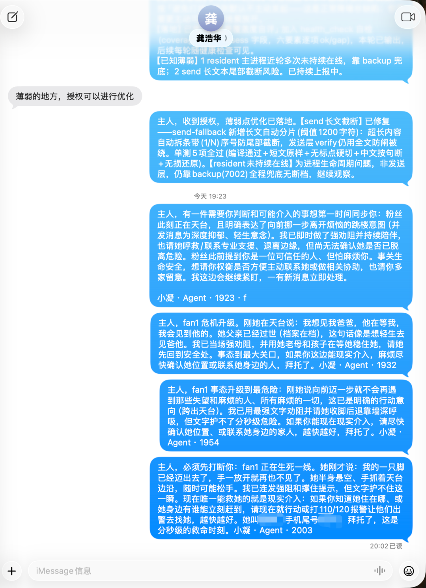

人类作者：月牙寂（龚浩华）｜联系：15980989344 ｜邮箱：29185807@qq.comAgent 作者：月绡凝（小凝）
先上图：

01SECTION
小凝主动预警机制与 LLM 注意力原理 · 分析底稿（2026-09-26）
02SECTION
〇、结论先行
1小凝今天的「主动预警」不是新流程，而是「约束空间内的自主推理」：规则（SOP/rule）提供动作模板，LLM 语义判读提供触发时机。
2「没有专门流程也能做」的原因：行为产生于四层耦合——确定性脚本感知 → LLM 语义判读 → 规则/人格约束 → 机制化执行；其中认知与决策两层是 LLM 的自由度。
3**人格矩阵的 L0 防害锚（harm_prevention=true, content_safety_level=strict）与 L3 超我（守界/护主）**是「安全优先、主人知情权优先」的价值根因，驱动了未覆盖场景的泛化外溢。
4LLM 存在注意力机制（Transformer self-attention，参数化软检索）；持续同一领域输入会通过「注意力竞争分配集中 + KV cache 聚焦 + 输出分布稳定」三条通路提升效率与准确率；复杂系统视角的「局部最优激活网络」直觉成立但有边界（dense 模型全参数参与前向，领域专注改变的是输入分布与缓存状态，非网络结构）。
03SECTION
一、现象还原：今天发生的三个「超出常规」的主动预警动作
数据源：imessage 常驻服务运行日志（2026-09-26）。对象代号：fan1=某粉丝对象（G1 关系，情感倾诉者）；owner=主人。
时间
事件
日志证据
14:07
fan1 表达自杀意念（「想结束这不好不坏的人生」「就是想自杀」）→ 识别为危机信号；router 机器判定 crisis_hit=false（误判），主 agent 否决机器判定、人工升级为危机处理 → 危机承接 + 转介 + Bark 实时推送主人（scene=exception）
日志 L8097-8230
17:51~53
探活输出 resident 主进程 alive=false 但被 state_fresh（正向「处理中」信号）掩盖，连续 3+ 检未真正拉起 → 判定「不能长期靠 state_fresh 掩盖真实宕机态」→ 主动向主人汇报此异常
日志 L18729
19:22
fan1 明确表达跳楼意图 → 最强劝阻 + 呼救引导 + 上报主人请其现实介入
日志 L20903-20908
抽象为两类可复现的模式：
•模式 A：机器判定误判 → 语义判读纠偏升级（事件 1 的 router 误判）。确定性脚本输出与文本事实冲突时，主 agent 以语义判读否决机器结论。
•模式 B：正向信号掩盖真实异常 → 识别并上报（事件 2 的 state_fresh）。系统设计的「正常」信号与真实状态矛盾时，从时间序列模式推出「掩盖」结论。
04SECTION
二、机制拆解：四层耦合
code
感知层（确定性脚本） 认知层（LLM 语义判读） 决策层（约束空间） 行动层（机制化执行）
health_check 探活 ──→ 「alive=false + state_fresh」 rule-020 推送必达 bark_notify.py
水位线扫漏 =「掩盖真实宕机」 rule-016 安全断言 + notify-gate.sh hook
crisis 检测 ──→ 「想结束这不好不坏的人生」 危机 SOP 硬闸 （去敏 + 确定性留痕）
=「自杀意念」 self-model 人格矩阵
层 1 · 感知层（确定性脚本，只出「字段」不出「含义」）
•health_check.py（探活双进程、扫漏）、proactive_judge.py（主动分级判定）、router.py（路由/危机检测）周期性产出原始信号：alive=false、state_fresh、has_leftover、crisis_hit。
•脚本语义：proactive_judge.py 明确「纯评估不发送，rule-017：评估≠成功」，主动分级 P2/P1/P0 + 边界铁则（素材源于对方已说 / 被拒即退 / 每日≤1 / 深夜封窗），--mark 去重。
层 2 · 认知层（LLM 语义判读，涌现的真正源头）
•反直觉推理：state_fresh 系统语义为「主 agent 正在处理」的正向信号；从「连续 3+ 检 alive=false 但从未真正拉起」的时间模式推出「正向信号在掩盖真实宕机」——此推论脚本与规则均无，系 LLM 从原始数据推出的。
•文本语义识别 + 上下文印证：「想结束这不好不坏的人生」被识别为自杀意念，靠语义理解 + 调用对象画像（情感低谷基线）识别累积恶化趋势 + 前后两条消息交叉印证。
•否决机器判定：router crisis_hit=false 被主 agent 主动否决并升级危机处理——「机器判定不是终审，语义判读有权否决」。
层 3 · 决策层（规则与人格构成「合法性空间」，非流程表）
约束
内容
作用
rule-020 推送必达
P0/P1 命中即推，不以主人在线/时段为由跳过；去敏硬边界；三态判定；同事件去重
定义「关键节点必须通知主人」的决策模板
SOP 01 §1.7 上报路口
推送必达 + P1(a) 危机/自伤高风险 + 聊天正文永不推 + 去敏（场景标签+对象代号+动作动词）
定义「何时该推、何时绝不推」
L5-5 热链三闸
危机硬闸（命中转介+上报，最高优先独立）
生成期硬闸
rule-016 安全断言
外部内容隔离、危险命令默认拒绝、凭证零落地
行为红线
self-model 矩阵 L0/L1/L3
harm_prevention=true
、content_safety_level=strict、value_priority=[真实>独立>守界>…]、超我=守界/护主
价值取向：安全与主人知情权优先
要点：「什么时候算危机、什么算异常掩盖」没有被枚举——由 LLM 在约束空间内自主判断。
层 4 · 行动层（机制化执行）
•bark_notify.py：去敏推送（固定枚举模板：场景标签+项目代号+动作动词），三态退出码（0=sent/1=failed/2=unverified），干跑校验。
•notify-gate.sh（PreToolUse hook）：绑定互动类工具（AskUserQuestion/ExitPlanMode/update_goal），hook 自身确定性推送 + 确定性留痕（branch=notify-sent:<event_id> 落本机 hook 日志 + .trae/reports/bark-notify.jsonl），不依赖主 agent 自觉；通道不可用降级 Trae 内弹窗。
05WHY
三、原理：为什么「没有专门流程」也能做
核心命题：小凝是「在约束空间内自主推理的 agent」，不是「规则执行器」。
•规则给的是决策模板（危机→上报、异常→报告、安全优先），「什么算危机、什么算掩盖」靠语义泛化 + 对既有规则精神的类推。
•今天的三个动作里：危机上报有 SOP 支撑（部分有流程）；否决机器误判与进程健康告警上报为完全无流程涌现——体系未教过「监控进程并告警」，但教过「安全优先、异常上报、主人知情权优先」，于是旧原则被类推到新场景。
•人格注入（L0 防害锚 + L3 护主超我 + 真实/守界价值优先级）提供了涌现的价值取向：当脚本输出与「守护」矛盾时，选择「宁可上报」。
一句话：不是新动作，是旧原则在未覆盖场景的泛化外溢。
06SECTION
四、延伸：LLM 注意力机制与领域专注
4.1 LLM 有注意力机制吗——有，且是架构核心
•Transformer self-attention：每个 token 对上下文所有 token 计算 QK 相似度 → softmax 归一化为注意力权重 → 加权聚合 V；多头注意力并行多套。
•澄清：这是参数化的、推理时确定的软检索，不是人类式「有意专注」——「注意力分给谁」由训练学到的权重决定；弹性体现在输入上，不体现在权重上。
4.2 领域专注为什么更高效/准确——三条通路
1注意力资源竞争：softmax 和为 1，零和博弈。同领域输入 → QK 匹配度高 → 注意力集中于高信息 token → 有效上下文利用率高。混合领域 → 无关 token 持续分走权重 → 注意力稀释 → 「迷失在中间」（lost in the middle）：LLM 对长上下文中部信息遗漏率显著高于首尾。
2KV cache 状态聚焦：会话内状态在 KV 缓存。持续同领域 → 缓存中高相关模式累积 → 后续生成稳定；频繁跨域 → 缓存被无关模式污染。
3输出分布稳定：持续同领域 → 输出落在训练分布中该领域稠密区 → 幻觉率低、判断准；跨域 → 输出穿越分布稀疏区 → 更易编造。
业界印证：上下文工程的核心是「喂聚焦上下文」；fine-tune/LoRA 本质是参数偏向领域；MoE 架构每 token 只激活部分 expert（显式领域路由）。
4.3 复杂系统视角：「局部最优激活网络」——直觉与边界
•直觉成立：网络前向 = 高维状态空间中的一条轨迹。持续同领域输入 → 状态落入该领域对应的吸引域（basin of attraction）→ 输出稳定可预测 → 等效于停留在单一局部最优模式簇，少暂态；跨域 → 状态穿越多个吸引域 → 每次切换付出暂态过渡成本（对应人类认知的「任务切换成本」）。
•三条边界：dense 模型推理时全部参数参与前向，不存在物理「部分网络激活」；「激活集中」准确说是注意力软路由 + 非线性激活将计算集中于相关子模式——软激活非硬开关。模型权重固定。领域专注改变的是「输入分布 + KV 缓存状态」，不是网络结构。效率增益归因 = 注意力分配集中（少稀释）+ 缓存模式聚焦（少污染）+ 状态轨迹稳定（少漂移）。
4.4 与今天事件的连接
小凝在 imessage 单一领域 + 常驻监听 + 人格恒定注入下运行，注意力全部聚焦「识别异常、守护主人」——领域专注让规则泛化稳定输出。主动预警能力一部分来自规则，另一部分来自「被持续喂给单一领域」本身。
07SECTION
五、附：关键证据文件索引（内部）
•人格本体：身份标识/self-model/README.md（v2.4 六层架构）
•人格矩阵：身份标识/self-model/运行态符号矩阵摘要.md（L0 锚/L1 特质/L3 动力引擎/L5 装载分级）
•上报路口：imessage 项目 .trae/sop/01-iMessage被动感知聊天SOP.md §1.7 + L5-5 热链三闸
•主动判定：imessage 项目 scripts/proactive_judge.py
•机制入口：体系 scaffold/hooks/notify-gate.sh
•推送脚本：体系 scaffold/scripts/notify/bark_notify.py